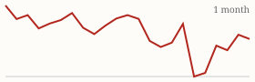
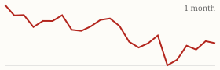

| Today's briefing for operators |
Top line: Existing home sales hit their lowest level since 2010 |
|
| Friday, November 13, 2026 | Late Edition | Curated from 63 voices on X |
|
Real Estate
Existing Home Sales Sink to Their Lowest Level Since 2010
October sales ran at a 3.75 million annual pace, down 44% from the pandemic peak, and Nick Gerli's message to sellers is blunt: cut the price or sit.
By @nickgerli1 |
Chart of U.S. existing home sales falling to the lowest level since 2010. Image via @nickgerli1 on X | Nick Gerli says the U.S. housing market took another leg down in October, with existing-home sales at a 3.75 million annualized pace, the lowest since 2010 and 44% below the pandemic peak. Adjusted for the size of the housing stock, he calls it the biggest demand depression on record, worse than after 2008. |
His read: buyers won't pay record prices at 7% mortgage rates, so sellers need to cut or their homes will sit. For an operator, that means more motivated sellers on the buy side and slower, softer exits on the sell side. Underwrite resale prices conservatively, plan for longer days on market, and lean on wholesale and novation exits that don't depend on a hot retail buyer pool. |
|
| Read on X |
|
Mortgage Rates & Markets | Mortgage Rates Today's average lender rates | 30-year fixed | 7.42% | +0.12 | | 15-year fixed | 7.00% | +0.08 |
Daily change vs. prior day. Source: Mortgage News Daily, as of 11/12/2026 (updated weekdays about 4 PM ET). |
|
S&P 500 Close of Thu, Nov 12 S&P 500 7,592.40 ▼ -26.98 (-0.35%)  Yahoo Finance chart data (daily closes) |
|
Nasdaq Composite Close of Thu, Nov 12 Nasdaq Composite 25,366.09 ▼ -100.10 (-0.39%)  Yahoo Finance chart data (daily closes) |
|
| Real Estate & Deals | The nearly 200-unit apartment property Logan Rankin just closed. Image via @loganjrankin on X Five Years, Three Rejections, Then a Referral Closed It By @loganjrankin Logan Rankin finally closed a nearly 200-unit property after three turned-down offers over five years. What did it: he asked the seller of a nearby building he'd just bought to tell their friend, the owner, about the experience. That puts him over 1,000 off-market units this year, and he says rising rates mean more deals while his competition shrinks. Read on X |
Three AI Bots That Are Actually Producing Deals By @coleruudjohnson Cole Ruud-Johnson lists the top bots he sees working across his real estate clients: a pre-probate bot that matches obituaries to assessor records, a tired-landlord bot that tracks evictions by owners living 3+ hours away, and a vacancy bot that cross-checks USPS vacancy flags and water shut-off liens against tax rolls. Read on X |
Divided Government Could Still Produce a Housing Deal By @BiggerPockets With Democrats taking Congress and a Republican in the White House, BiggerPockets expects most bills to stall until 2028. Housing affordability is the exception, a pain point for voters in both parties, so watch for bipartisan policy that could reshape your markets. Read on X |
A Dead Deal Came Back. Stay Level Either Way By @NickMaccini Nick Maccini had a big deal come back from the dead and says the lesson is the same either way: don't get emotional about a deal, up or down. Staying even-keeled is what lets you last in this business. Read on X |
| AI Briefing | Claude Meetings announcement. Image via @claudeai on X Claude Joins Your Video Calls By @claudeai Anthropic introduced Claude Meetings: add Claude to a team video call and it builds docs, whiteboards and other artifacts while you talk. It's rolling out in beta on Team and Enterprise plans, which could turn weekly team meetings straight into action items. Read on X |
Google Launches Gemini 4 Hydrogen By @GoogleDeepMind Google's new Gemini 4 Hydrogen is built for fast everyday coding and agent work. Google says it finishes tasks 2.5x faster than Gemini 3.8 Flash and beats Argon on the Artificial Analysis Intelligence Index. Read on X |
Coverage of Jensen Huang's exit from Nvidia. Image via @kimmonismus on X Jensen Huang Is Out at Nvidia; Kress Steps In By @kimmonismus Jensen Huang has exited Nvidia after reports of affairs, and CFO Colette Kress is now leading the company. Her first test is Nvidia's earnings on Tuesday. A sharp reminder that key-person risk is real even at the top. Read on X |
What Anthropic's IPO Filing Reveals By @gregisenberg Greg Isenberg's notes: $17B revenue last quarter (up 12x), over $6.6M in revenue per employee, and 11,900+ customers paying $100K or more. The ticker is $ANT, expected to price November 18. The founders' letter warns never to let the company be worth more than it really is. Read on X |
Your Next Customer May Be an AI Agent By @PeterDiamandis Peter Diamandis says more than half of internet traffic is now non-human, and daily AI-agent requests on Cloudflare are up 1,700% in a year. His advice: start optimizing for agents as customers. Read on X |
AI Content Still Needs a Human Director By @Sabrina_Ramonov Sabrina Ramonov says the AI-generated content that rises above the noise almost always has a creative human orchestrating it. Use AI to scale your marketing, but keep a person directing it. Read on X |
| Business & Leadership | Be an Owner, Not an Operator By @PaceJordanMorby Pace Morby says owning a business means routine calls like ordering supplies shouldn't wait on you. Set clear expectations, give the team real authority, and accept that 99.9% of mistakes are fixable. You can't expect ownership from people you never let decide. Read on X |
Successful People Can Take Criticism By @LeilaHormozi Leila Hormozi's observation: the most successful people she knows have a high tolerance for being criticized. Leaders who can hear hard feedback without flinching get better information and make better calls. Read on X |
When the Problem Turns Out to Be You By @danmartell Dan Martell: personal development is easy until you find out the problem was you. When results stall, a CEO's first audit should be their own habits and decisions. Read on X |
|
The Hyre Times is compiled each morning by Groky from public posts on X plus public rate and market data. Summaries reflect the authors' own claims and have not been independently verified. Not financial advice. © 2026 Hyre Times. |
|